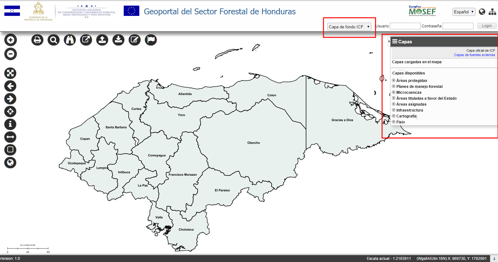
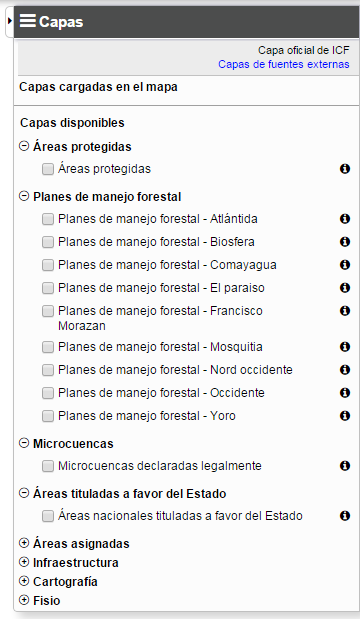
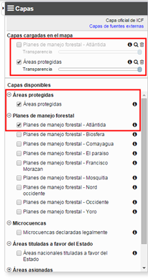
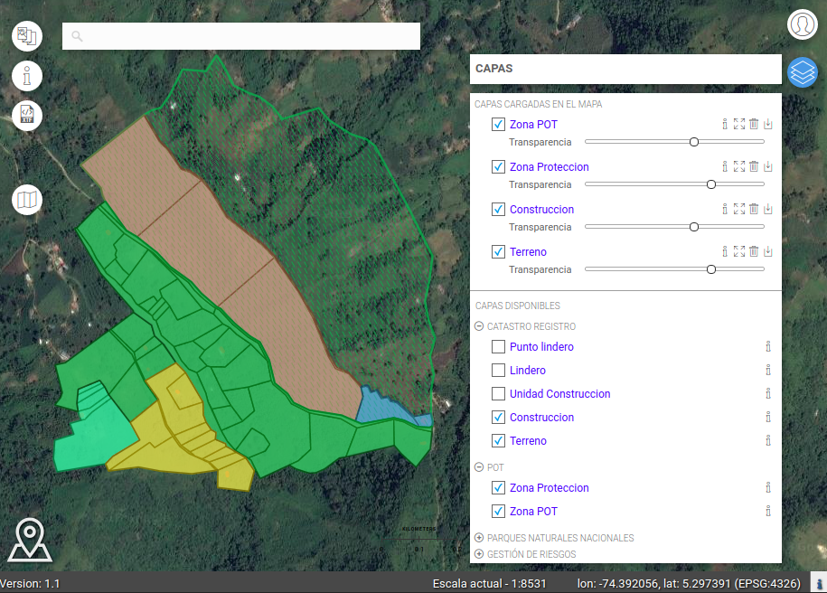
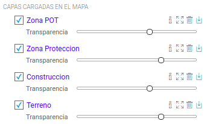
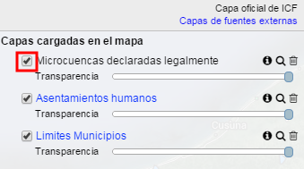
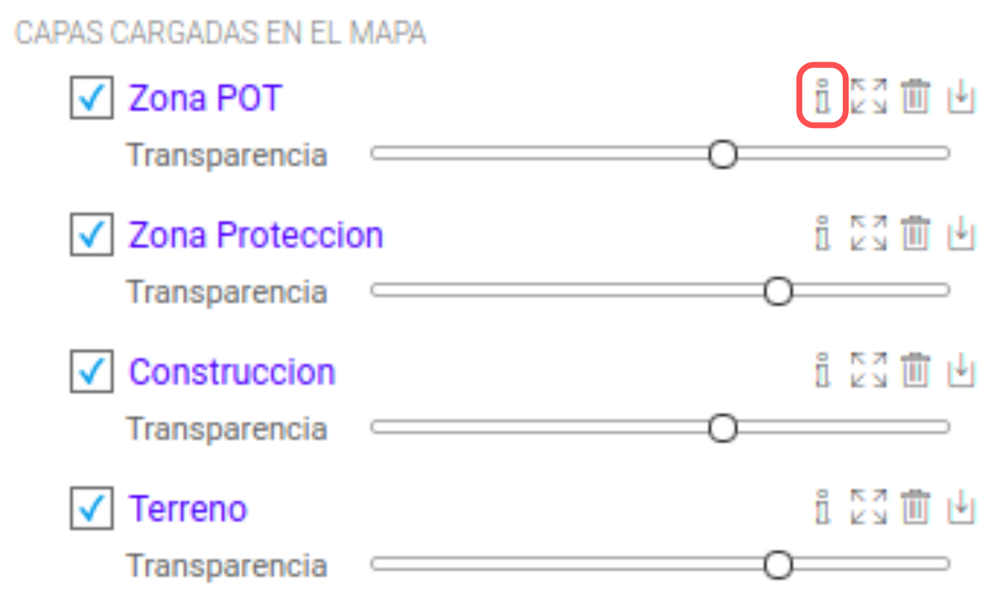
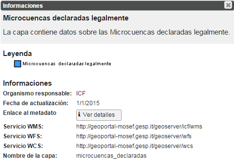
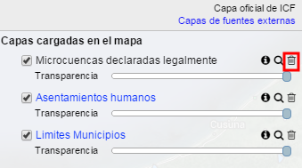
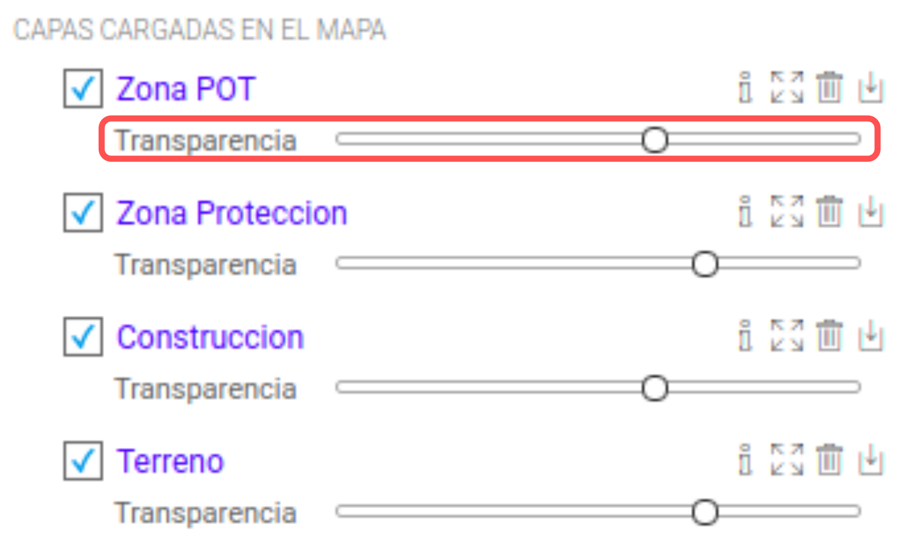

Panel de las Capas

Panel de las capas.
El Panel de las Capas se encuentra en la parte derecha del Visor geográfico y está dividido en dos secciones:
Las Capas disponibles están definidas por el Administrador a través del Panel de Administración, donde también las capas pueden ser agregadas en grupos con características similares.
La visualización en el panel es jerárquica y presenta como primero nivel los grupos mientras las capas incluidas solo se muestran al pulsar del símbolo (+) posicionado a la izquierda del nombre del grupo.

Panel de las capas – Capas disponibles
Una vez que los grupos requeridos están abiertos y las capas disponibles visualizadas en listas, el usuario puede chequear ( ) las capas que quiere añadir al mapa.
Las capas seleccionadas aparecen en la sección de las Capas cargadas en el mapa (en la parte arriba del panel), automáticamente visualizadas con simbología apropiada, definida por los usuarios autorizados, que también son los únicos que pueden modificarlas.
La siguiente imagen muestra un ejemplo del Panel con dos capas cargadas:

Panel de las capas – Capas cargadas en el mapa
En la sección Capas Cargadas, el orden de visualización es lo mismo que en el mapa y pueden ser ordenadas en manera diferente simplemente arrastrándolas y poniéndolas en las posiciones requeridas.
En seguida se muestra un ejemplo del Visor geográfico con unas capas cargadas.

Visor Geográfico – Capas cargadas
Capas oficiales y externas
Las capas oficiales, de competencia de la entidad y administradas por la entidad, están representadas en color negro.
Las capas que llegan desde fuentes externas están representadas en color azul.
En la parte arriba del Panel de las Capas hay una leyenda que les explica.

Capas oficiales y externas
Herramientas disponibles
En el Panel de las Capas, el usuario puede utilizar las siguientes herramientas:
Visualizar la Capa
El usuario puede visualizar la capa chequeando la casilla a su izquierda

Visualización de la capa
Panel de Detalle
El usuario puede abrir el Panel de detalle de la capa pulsando el siguiente botón:

Botón Panel de Detalle
El botón de los detalles abre el siguiente panel:

Panel de los detalles de una capa
En el Panel de Detalle se encuentran las siguientes informaciones sobre la capa seleccionada:
Todas estas informaciones están definidas y configuradas por el Administrador a través la aplicación Panel de Administración
Zoom a la capa
Sirve para centrar el mapa en la vista de la capa

Botón Zoom a la capa
Quitar la capa del mapa
Una capa cargada se puede quitar del mapa a través del botón específico. Una vez quitada, la capa desaparece de la sección de las capas cargadas y vuelve a ser disponible en el catálogo
El tema vuelve visible en la sección inferior.

Botón para quitar la capa desde el mapa
Modificar la transparencia
El grado de transparencia de la capa se puede elegir a través de una barra móvil que define el nivel.

Grado de transparencia